The dataset explored in this project comes from a bicycle signal installation experiment done in Austin, TX. At each of the 12 intersections, UT-CTR captured video recordings before and after bicycle silhouette signal faces were installed by the City of Austin. Each video captures at least 40 least 40 times when a cyclist and vehicle cross each other’s path while traveling through the intersection (called an interaction).
The main variables of interest in this study are safety related: running the red light and failure to yield. For this study, UT-CTR tallied cyclist/vehicle red light running, cyclist/vehicle yielded and did not yield, and various types of interactions between cyclists and vehicles. Red light running behaviors were further broken down into three types: gap acceptance (coming to a stop at a red light, and searching for a gap), signal jump (entering the intersection at the tail end of a red signal just before the green indication comes on), or other (generally, this means blasting through a solid red light). The interactions considered are one party reactions, two party reactions, conflict negotiated, and near misses. One and two parties reactions are when a cyclist and vehicle cross paths and either on or both parties changes their speed or position for reasons other than properly yielding the right of way. A conflict negotiated occurs when a cyclist and vehicle cross paths, and successfully yield the right of way to one another. Other data elements UT-CTR captured for each intersection include the hourly cyclist volumes, the hourly vehicle volumes, the type of bicycling facility, and the number of lanes perpendicular to the cyclist path.
First things first. Loading up the required libraries.
library(tidyverse)
library(dplyr)
library(rstatix)
library(lmtest)
library(sandwich)
library(plotROC)
library(glmnet)Next, reading in the data from the csv file and grabbing relevant columns
bikes <- read_csv("bikes.csv")
bikes <- bikesFor the experiment, we want to determine if there’s a difference in any of the yielding, red light compliance, or interaction response variables by test bed, before versus after bicycle signal installation, or by treatment. A treatment is a combination of a test bed (6 test beds) and a scenario (before, after, or after 2). There’s a total of 26 observations, and 133 variables measured for each observation. The 26 observations are a before, after, or second after scenario at each of the 11 intersections.
The MANOVA considers the following variables: PR1_hr= one party reaction per hour, PR2_hr = two party reaction per hour, NM_hr = near miss per hour, ConNeg_hr = conflict negotiated (i.e. number of proper yields) per hour, YieldVeh = percentage of vehicles that yielding properly, YieldBike = percentage of bicycles that yielding properly, BRRL_hr = bicycle red light runs per hour, VehSig_hr = vehicle red light runs per hour. All variables that end in _PC are per potential conflict instead of per hour. A potential conflict is any time that a cyclist path and a vehicle past crossed within the intersection.
bikes_m <- bikes %>% drop_na(End) %>% mutate(TestBed = as.factor(TestBed), YieldVeh = as.numeric(YieldVeh), YieldBike = as.numeric(YieldBike)) %>% mutate_at(which(grepl("_hr|_PC", names(bikes))), as.numeric)
#yielding, red light compliance, or interactions by test bed, 1 test
man <- manova(cbind(PR1_hr, PR1_PC, PR2_hr, PR2_PC, NM_hr, NM_PC, ConNeg_hr, ConNeg_PC, YieldVeh, YieldBike, BRRL_hr, BRRL_PC, VehSig_hr, VehSig_PC)~TestBed, data = bikes_m)
summary(man) ## Df Pillai approx F num Df den Df Pr(>F)
## TestBed 4 3.1999 1.4285 56 20 0.1909
## Residuals 15#yielding, red light compliance, or interactions by scenario, 1 test
man1 <- manova(cbind(PR1_hr, PR2_hr, NM_hr, ConNeg_hr, YieldVeh, YieldBike, BRRL_hr, BRRL_PC, VehSig_hr, VehSig_PC)~Scenario, data = bikes_m)
summary(man1)## Df Pillai approx F num Df den Df Pr(>F)
## Scenario 2 1.1676 1.2623 20 18 0.3118
## Residuals 17#yielding, red light compliance, or interactions by both scenario and test bed, 1 test
man2 <- manova(cbind(PR1_hr, PR2_hr, NM_hr, ConNeg_hr, YieldVeh, YieldBike, BRRL_hr, BRRL_PC, VehSig_hr, VehSig_PC)~SceTest, data = bikes_m)
summary(man2)## Df Pillai approx F num Df den Df Pr(>F)
## SceTest 1 0.78399 3.2664 10 9 0.04457 *
## Residuals 18
## ---
## Signif. codes: 0 '***' 0.001 '**' 0.01 '*' 0.05 '.' 0.1
' ' 1#trying to look for multivariate normality
ggplot(bikes_m, aes(x = YieldVeh, y = BRRL_PC)) +
geom_point() + geom_density_2d() + facet_wrap(~TestBed, scales = "fixed")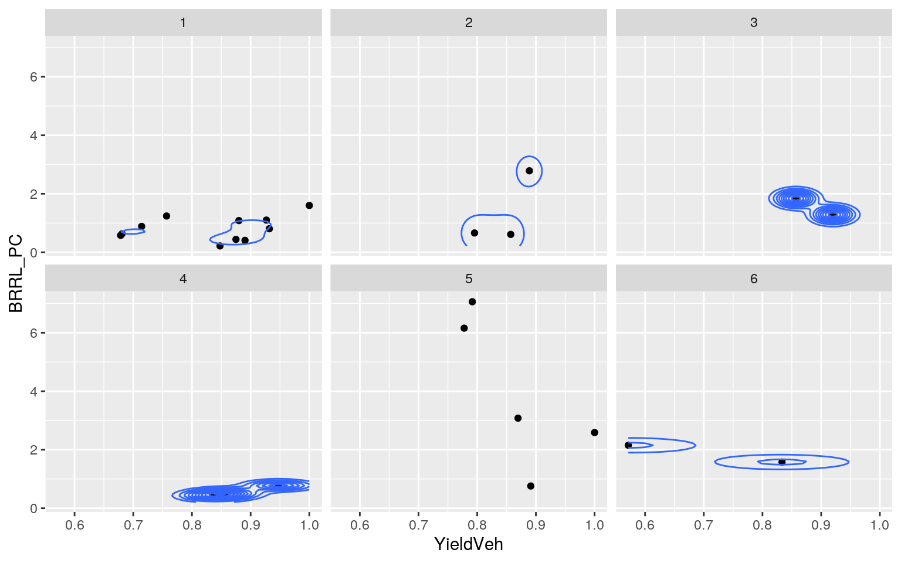
The MANOVA considering each treatment SceTest as an explanatory variable shows that there is a least one significant difference for at least one of the response variables. The other two MANOVAs did not detect any significant differences. In general, MANOVA makes a ton of assumptions that are really hard to access and meet in practice. Some of the assumptions include, multivariate normality, homogeneity of variance, and no multicollinearity. From the plot, it doesn’t appear the multivariate normality is met.
The univariate ANOVAs show that there’s a mean difference in response for bicycle red light runs per hour BRRL_hr and per potential conflict BRRL_PC. Some of the pairwise comparisons are not possible because there’s only one intersection (n=1) belonging to a specific treatment. The total number of relevant tests done on are 1 + 10 + 6 + 6 = 23 tests. Therefore, the probability of a type 1 error is 1 - 0.95^23 = 0.69, and the Bonferroni adjusted p-value is 0.05/23 = 0.002. Out of the possible comparisons, there are no significant differences in BRRL_hr or BRRL_PC after a Bonferroni adjustment.
summary.aov(man2) #sig diff in bicycle red light runs per hr and per PC, 10 tests## Response PR1_hr :
## Df Sum Sq Mean Sq F value Pr(>F)
## SceTest 1 5.0064 5.0064 3.998 0.06088 .
## Residuals 18 22.5398 1.2522
## ---
## Signif. codes: 0 '***' 0.001 '**' 0.01 '*' 0.05 '.' 0.1
' ' 1
##
## Response PR2_hr :
## Df Sum Sq Mean Sq F value Pr(>F)
## SceTest 1 0.07662 0.076623 0.5877 0.4533
## Residuals 18 2.34698 0.130388
##
## Response NM_hr :
## Df Sum Sq Mean Sq F value Pr(>F)
## SceTest 1 0.9371 0.93711 3.9903 0.06111 .
## Residuals 18 4.2273 0.23485
## ---
## Signif. codes: 0 '***' 0.001 '**' 0.01 '*' 0.05 '.' 0.1
' ' 1
##
## Response ConNeg_hr :
## Df Sum Sq Mean Sq F value Pr(>F)
## SceTest 1 180.45 180.446 3.3936 0.08199 .
## Residuals 18 957.10 53.172
## ---
## Signif. codes: 0 '***' 0.001 '**' 0.01 '*' 0.05 '.' 0.1
' ' 1
##
## Response YieldVeh :
## Df Sum Sq Mean Sq F value Pr(>F)
## SceTest 1 0.009293 0.0092931 1.0298 0.3237
## Residuals 18 0.162435 0.0090242
##
## Response YieldBike :
## Df Sum Sq Mean Sq F value Pr(>F)
## SceTest 1 0.01246 0.012462 0.3413 0.5663
## Residuals 18 0.65720 0.036511
##
## Response BRRL_hr :
## Df Sum Sq Mean Sq F value Pr(>F)
## SceTest 1 210.53 210.532 5.9142 0.02568 *
## Residuals 18 640.75 35.597
## ---
## Signif. codes: 0 '***' 0.001 '**' 0.01 '*' 0.05 '.' 0.1
' ' 1
##
## Response BRRL_PC :
## Df Sum Sq Mean Sq F value Pr(>F)
## SceTest 1 28.379 28.3792 14.106 0.001447 **
## Residuals 18 36.212 2.0118
## ---
## Signif. codes: 0 '***' 0.001 '**' 0.01 '*' 0.05 '.' 0.1
' ' 1
##
## Response VehSig_hr :
## Df Sum Sq Mean Sq F value Pr(>F)
## SceTest 1 0.0005 0.0005 5e-04 0.9832
## Residuals 18 19.7577 1.0977
##
## Response VehSig_PC :
## Df Sum Sq Mean Sq F value Pr(>F)
## SceTest 1 0.05068 0.050684 0.7914 0.3854
## Residuals 18 1.15274 0.064041
##
## 6 observations deleted due to missingness#looking at mean differences in bicycle red light runs per hr
bikes_m %>% group_by(SceTest, TestBed) %>% summarize(mean(BRRL_hr))## # A tibble: 16 x 3
## # Groups: SceTest [16]
## SceTest TestBed `mean(BRRL_hr)`
## <dbl> <fct> <dbl>
## 1 1 1 10.6
## 2 2 1 7.89
## 3 3 1 6.41
## 4 4 2 1.74
## 5 5 2 1.63
## 6 6 2 1.65
## 7 7 3 4.25
## 8 8 3 2.63
## 9 9 4 8.18
## 10 10 4 5.08
## 11 11 4 5.80
## 12 12 5 11.8
## 13 13 5 17.7
## 14 14 5 29.7
## 15 15 6 1.25
## 16 16 6 1.17#removing n = 1
bikes_m %>% group_by(SceTest) %>% count %>% filter(n>1)## # A tibble: 4 x 2
## # Groups: SceTest [4]
## SceTest n
## <dbl> <int>
## 1 1 5
## 2 2 5
## 3 12 2
## 4 13 2bikes_rep <- bikes_m %>% group_by(SceTest) %>% filter(SceTest %in% c(1,2,12,13))
#bicycle red light runs per hour by treatment, 6 tests
pairwise.t.test(bikes_rep$BRRL_hr, bikes_rep$SceTest, p.adjust.method = "none")##
## Pairwise comparisons using t tests with pooled SD
##
## data: bikes_rep$BRRL_hr and bikes_rep$SceTest
##
## 1 2 12
## 2 0.287 - -
## 12 0.696 0.239 -
## 13 0.045 0.011 0.146
##
## P value adjustment method: none#bicycle red light runs per potential conflict by treatment, 6 tests
pairwise.t.test(bikes_rep$BRRL_PC, bikes_rep$SceTest, p.adjust.method = "none")##
## Pairwise comparisons using t tests with pooled SD
##
## data: bikes_rep$BRRL_PC and bikes_rep$SceTest
##
## 1 2 12
## 2 0.791 - -
## 12 0.070 0.098 -
## 13 0.012 0.018 0.414
##
## P value adjustment method: noneA randomization test can help with seeing if there is a difference for before versus after in response variables we’re interested. The nice thing about randomizations tests is we can do these comparisons in without having to worry about all the traditional assumptions that go with other parametric tests. With a randomization tests, there are no assumptions that could be violated because we’re generating our own null distribution to compare our observations to and determine significance.
Does vehicle failure to yield differ in the before versus after, excluding after 2 scenarios? According to the randomization test, no there’s no difference in before versus after.
#how can I just make is before versus others? How can I do before versus after by testbed?
bikes_rand <- bikes %>% select(Scenario, YieldVeh) %>% filter(!Scenario == "A2")
#visualizing the distribution
ggplot(bikes_rand, aes(YieldVeh, fill = Scenario)) +
geom_histogram(bins = 8) +
facet_wrap(~Scenario)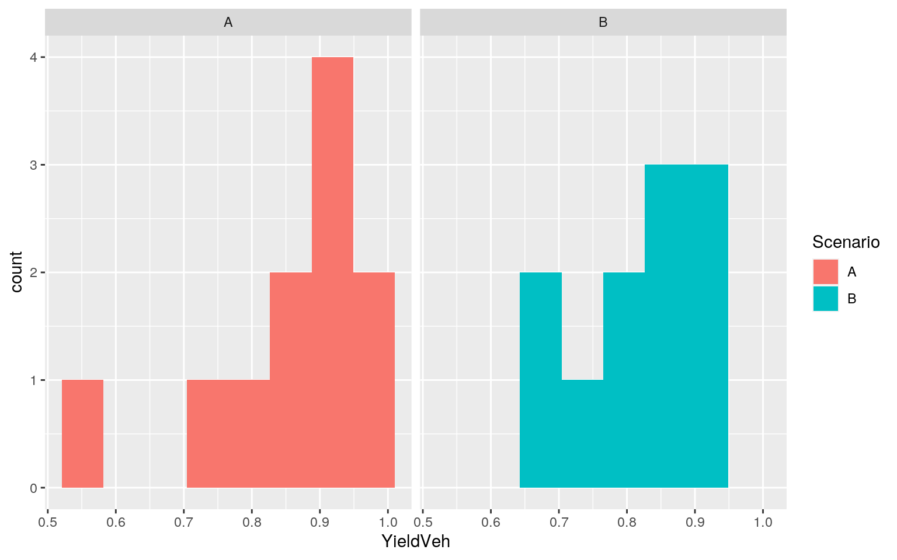
#ORIGINAL mean difference - slightly better vehicle yielding in the A = After scenario
bikes_rand %>% group_by(Scenario) %>% summarize(means = mean(YieldVeh)) %>% summarize('mean_diff' = diff(means))## # A tibble: 1 x 1
## mean_diff
## <dbl>
## 1 -0.0378#scrambling the columns to do the randomization test
rand_dist <- vector()
for(i in 1:5000){
new <- data.frame(YieldVeh = sample(bikes_rand$YieldVeh), Scenario = bikes_rand$Scenario)
rand_dist[i] <- mean(new[new$Scenario == "A",]$YieldVeh) - mean(new[new$Scenario == "B",]$YieldVeh)
}
#my OWN distribution under the null hypothesis
{hist(rand_dist, main = "", ylab = ""); abline(v = c(-0.0377522, 0.0377522), col = "red")}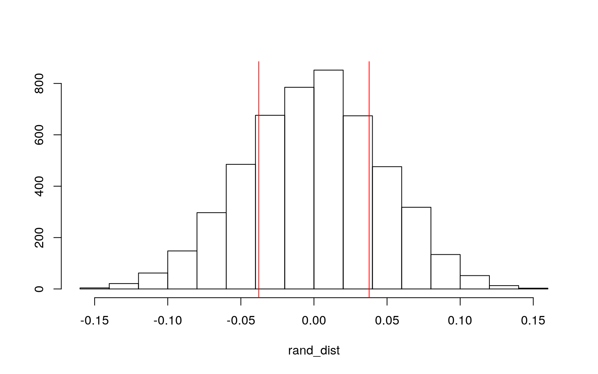
#Testing the null hypothesis; p-value: fail to reject!
mean(rand_dist > 0.0377522 | rand_dist < -0.0377522)## [1] 0.4304Does hourly cyclist red light running behavior differ in the before versus after? According to the randomization test, no it does not differ significantly in the before and after scenarios.
bikes_rand <- bikes %>% select(Scenario, BRRL_hr) %>% mutate(BRRL_hr = as.numeric(BRRL_hr)) %>% filter(!Scenario == "A2")
#visualizing the distribution
ggplot(bikes_rand, aes(BRRL_hr, fill = Scenario)) +
geom_histogram(bins = 8) +
facet_wrap(~Scenario)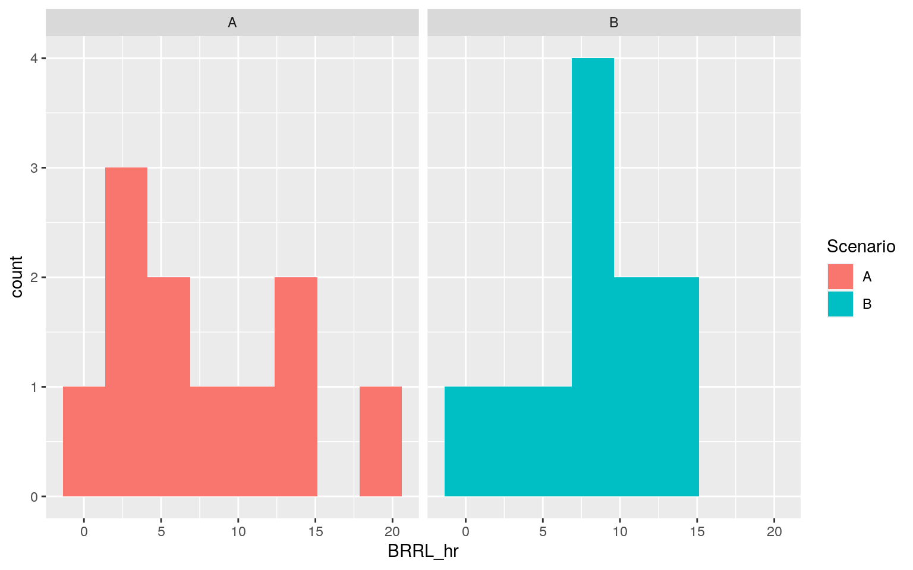
#ORIGINAL mean difference - slightly better vehicle yielding in the A = After scenario
bikes_rand %>% group_by(Scenario) %>% summarize(means = mean(BRRL_hr)) %>% summarize('mean_diff' = diff(means))## # A tibble: 1 x 1
## mean_diff
## <dbl>
## 1 0.587#scrambling the columns to do the randomization test
rand_dist <- vector()
for(i in 1:5000){
new <- data.frame(BRRL_hr = sample(bikes_rand$BRRL_hr), Scenario = bikes_rand$Scenario)
rand_dist[i] <- mean(new[new$Scenario == "A",]$BRRL_hr) - mean(new[new$Scenario == "B",]$BRRL_hr)
}
#my OWN distribution under the null hypothesis
{hist(rand_dist, main = "", ylab = ""); abline(v = c(-0.5866793, 0.5866793), col = "red")}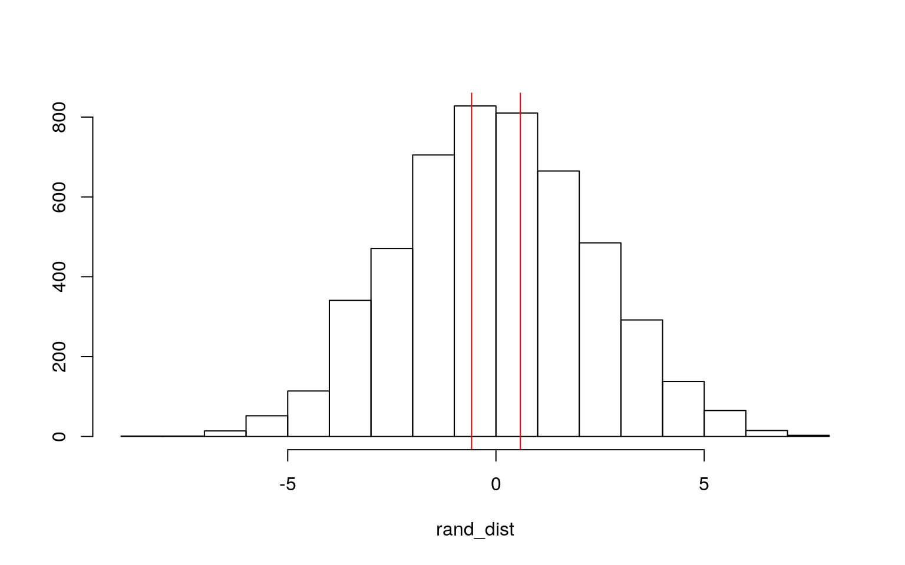
#Testing the null hypothesis; p-value: fail to reject!
mean(rand_dist > 0.5866793 | rand_dist < -0.5866793)## [1] 0.8Does vehicle red light non-compliance per hour change for before versus after? According to the randomization test, it does not.
#how can I just make is before versus others? How can I do before versus after by testbed?
bikes_rand <- bikes %>% select(Scenario, VehSig_hr) %>% mutate(VehSig_hr = as.numeric(VehSig_hr)) %>% filter(!Scenario == "A2")
#visualizing the distribution
ggplot(bikes_rand, aes(VehSig_hr, fill = Scenario)) +
geom_histogram(bins = 8) +
facet_wrap(~Scenario)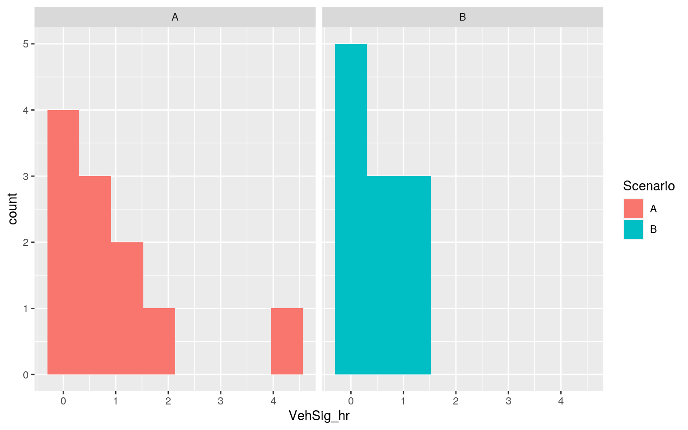
#ORIGINAL mean difference - slightly worse vehicle red light running in the A = After scenario
bikes_rand %>% group_by(Scenario) %>% summarize(means = mean(VehSig_hr)) %>% summarize('mean_diff' = diff(means))## # A tibble: 1 x 1
## mean_diff
## <dbl>
## 1 -0.435#scrambling the columns to do the randomization test
rand_dist <- vector()
for(i in 1:5000){
new <- data.frame(VehSig_hr = sample(bikes_rand$VehSig_hr), Scenario = bikes_rand$Scenario)
rand_dist[i] <- mean(new[new$Scenario == "A",]$VehSig_hr) - mean(new[new$Scenario == "B",]$VehSig_hr)
}
#my OWN distribution under the null hypothesis
{hist(rand_dist, main = "", ylab = ""); abline(v = c(-0.4345455 , 0.4345455), col = "red")}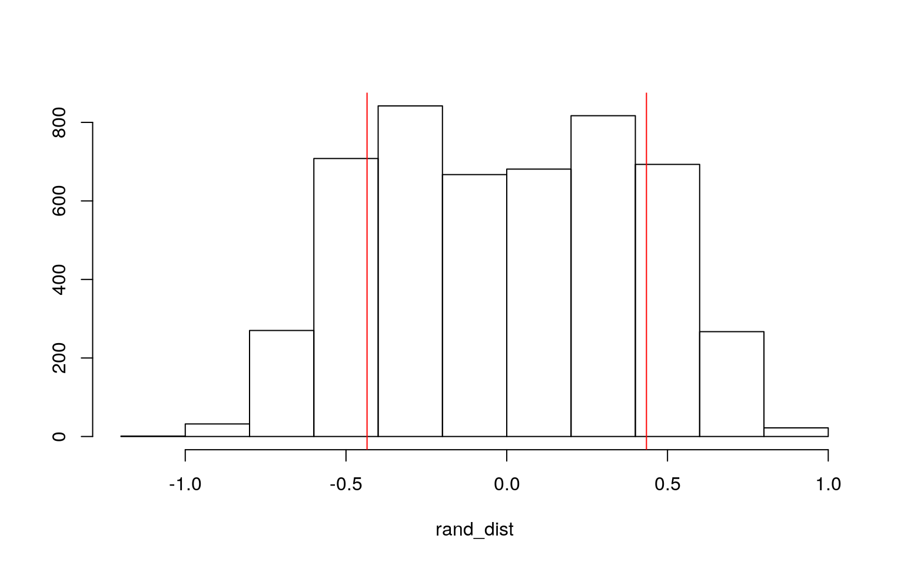
#Testing the null hypothesis; p-value: fail to reject!
mean(rand_dist > 0.4345455 | rand_dist < -0.4345455)## [1] 0.341This linear regression is predicting cyclist red light compliance per hour BRRL_hr from bicycling hourly volumes per hour and scenarios.
Mean/predicted red light runs per hour at locations with zero hourly bicycle volume in the before scenario is 7.92162. Note that this interpretation doesn’t make sense in reality because zero cyclists should mean zero cyclist red light runs.
For every one unit increase in hourly bicycle volume, cyclist red light runs per hour decrease for the before scenario by 0.10726.
Scenario A with zero hourly bicycle volume have 0.65171 cyclist red light runs per hour predicted.
Scenario A2 with zero hourly bicycle volume have 1.98899 cyclist red light runs per hour predicted.
The slope of cyclist red light runs per hour on hourly bicycle volume is 0.03382 greater for Scenario A than for Scenario B.
The slope of cyclist red light runs per hour on hourly bicycle volume is 0.09166 greater for Scenario A2 than for Scenario B.
The model explains about 45% of the variability according to the adjusted r-squared.
#change reference level to before B
bikes_m <- bikes_m %>% mutate(Scenario = factor(Scenario, levels = c("B", "A", "A2")))
bikes_m$BikePerHr_Bikes_c <- bikes_m$BikePerHr_Bikes - mean(bikes_m$BikePerHr_Bikes, na.rm = T)
#regression for cyclist red light runs per hour
fit <- lm(BRRL_hr ~ BikePerHr_Bikes_c*Scenario, data = bikes_m)
summary(fit)##
## Call:
## lm(formula = BRRL_hr ~ BikePerHr_Bikes_c * Scenario,
data = bikes_m)
##
## Residuals:
## Min 1Q Median 3Q Max
## -11.7080 -1.7494 -0.7511 1.8543 11.4903
##
## Coefficients:
## Estimate Std. Error t value Pr(>|t|)
## (Intercept) 7.92162 1.51190 5.240 3.97e-05 ***
## BikePerHr_Bikes_c 0.10726 0.04872 2.201 0.0396 *
## ScenarioA 0.65171 2.14376 0.304 0.7643
## ScenarioA2 1.98899 2.92932 0.679 0.5049
## BikePerHr_Bikes_c:ScenarioA 0.03382 0.06494 0.521 0.6083
## BikePerHr_Bikes_c:ScenarioA2 0.09166 0.08304 1.104
0.2828
## ---
## Signif. codes: 0 '***' 0.001 '**' 0.01 '*' 0.05 '.' 0.1
' ' 1
##
## Residual standard error: 4.973 on 20 degrees of freedom
## Multiple R-squared: 0.5612, Adjusted R-squared: 0.4515
## F-statistic: 5.115 on 5 and 20 DF, p-value: 0.003506bikes_m %>% select(BRRL_hr, TestBed, Scenario, BikePerHr_Bikes_c) %>% na.omit %>% ggplot(aes(BikePerHr_Bikes_c, BRRL_hr, color = Scenario)) + geom_point() + geom_smooth(method = "lm") 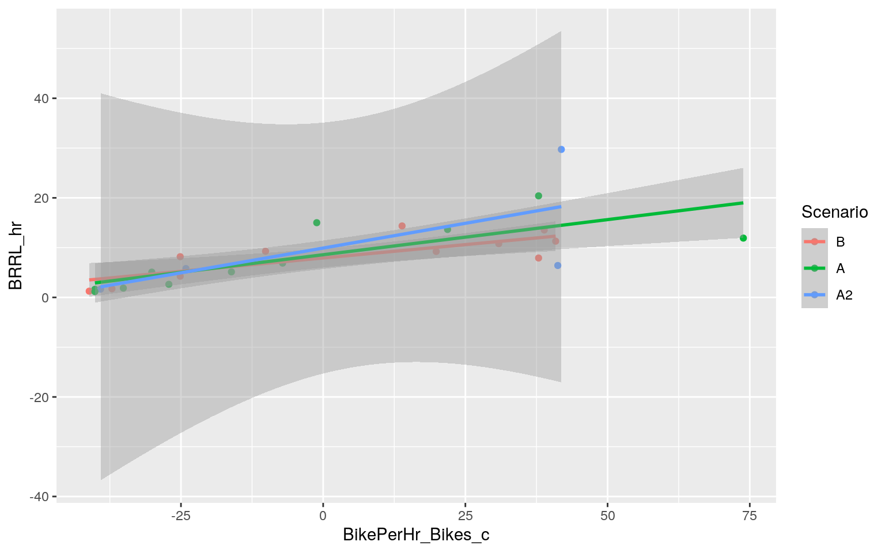
In general, the qq plot shows the normality assumption is violated, and the scatterplot and the bptest show that homoskedasticity is NOT met. The values fan out as x increases, and the Breush-Pagan Test rejects the null hypothesis of homoskedasticity.
#Check linearity
resids <- fit$residuals
fitvals <- fit$fitted.values
plot(fitvals, resids); abline(h = 0, col = "red")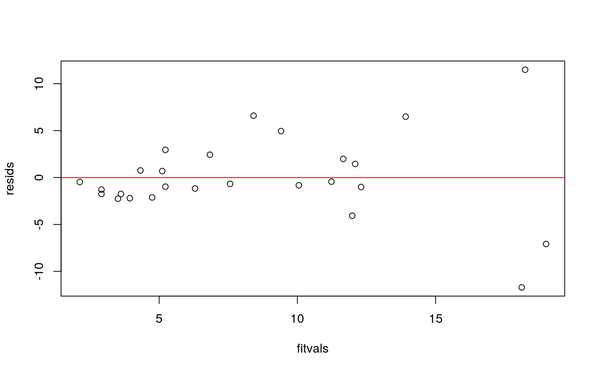
#Check normality
par(mfrow = c(1,2)); hist(resids); qqnorm(resids); qqline(resids, col = 'red')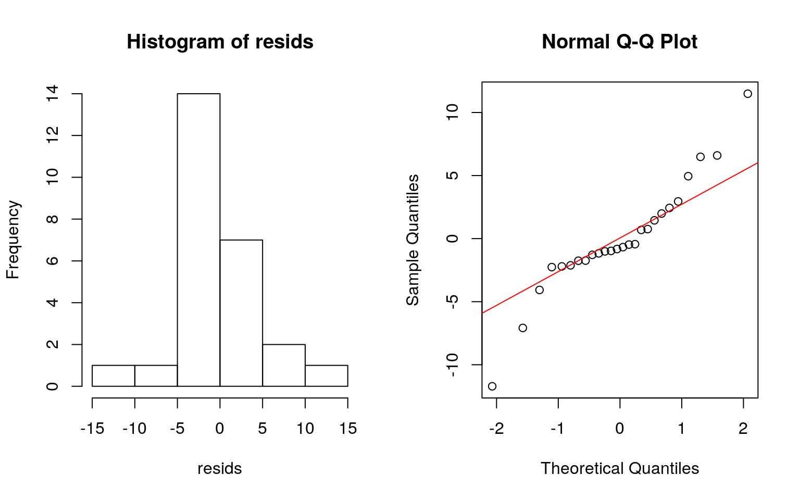
#Check homoskedasticity
bikes_m %>% select(BRRL_hr, TestBed, Scenario, BikePerHr_Bikes_c) %>% na.omit %>% ggplot(aes(BikePerHr_Bikes_c, BRRL_hr, color = Scenario)) + geom_point()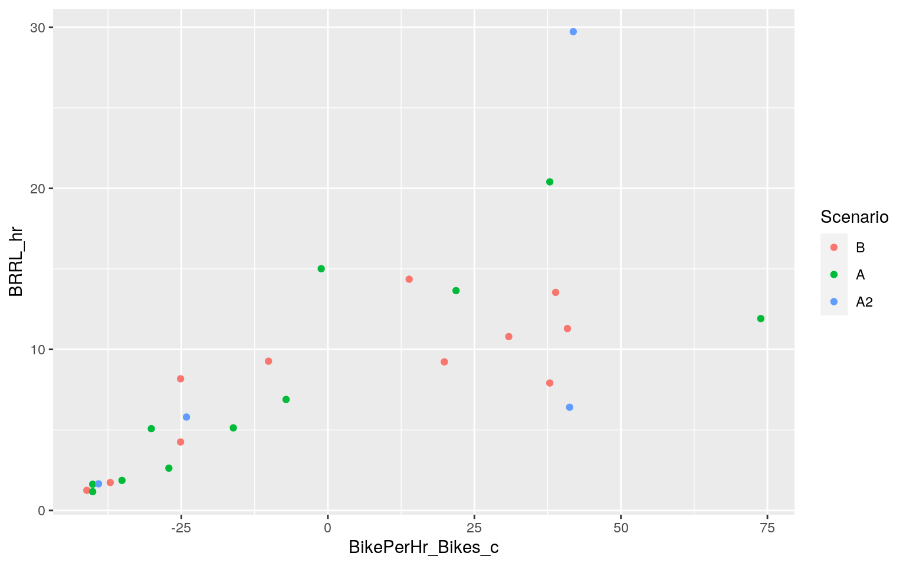
Since homoskedasticity is violated, robust SEs will help because they are robust against this violation. With the robust SEs, the intercept and hourly bicycle volume BikePerHr_Bikes_c are more significant than they were before.
#change reference level to before B
bikes_m <- bikes_m %>% mutate(Scenario = factor(Scenario, levels = c("B", "A", "A2")))
bikes_m$BikePerHr_Bikes_c <- bikes_m$BikePerHr_Bikes - mean(bikes_m$BikePerHr_Bikes, na.rm = T)
#regression for cyclist red light runs per hour
fit <- lm(BRRL_hr ~ BikePerHr_Bikes_c*Scenario, data = bikes_m)
coeftest(fit, vcovHC(fit))##
## t test of coefficients:
##
## Estimate Std. Error t value Pr(>|t|)
## (Intercept) 7.921618 0.925906 8.5555 4.069e-08 ***
## BikePerHr_Bikes_c 0.107263 0.028484 3.7657 0.001216 **
## ScenarioA 0.651708 2.546257 0.2559 0.800606
## ScenarioA2 1.988987 7.116104 0.2795 0.782727
## BikePerHr_Bikes_c:ScenarioA 0.033819 0.104717 0.3230
0.750081
## BikePerHr_Bikes_c:ScenarioA2 0.091657 0.219439 0.4177
0.680626
## ---
## Signif. codes: 0 '***' 0.001 '**' 0.01 '*' 0.05 '.' 0.1
' ' 1Now, re-running the same regression model but with bootstrapped standard errors. The bootstrapped SEs are larger than what they were for for the original SEs and for the robust SEs. But, the null hypothesis is still rejected for this regression model since 0 is not contained the first two confidence interval parameter estimates (intercept and hourly bike volume).
#change reference level to before B
bikes_m <- bikes_m %>% mutate(Scenario = factor(Scenario, levels = c("B", "A", "A2")))
bikes_m$BikePerHr_Bikes_c <- bikes_m$BikePerHr_Bikes - mean(bikes_m$BikePerHr_Bikes, na.rm = T)
fit <- lm(BRRL_hr ~ BikePerHr_Bikes_c*Scenario, data = bikes_m) #fit model
resids <- fit$residuals #save residuals
fitted <- fit$fitted.values #save yhats
#repeat 5000 times
resid_resamp <- replicate(5000,{
new_resids <- sample(resids, replace = TRUE) #resample resids w/ replacement
bikes_m$new_y <- fitted + new_resids #add new resids to yhats to get new "data"
fit <- lm(new_y ~ BikePerHr_Bikes_c*Scenario, data = bikes_m) #refit model
coef(fit)
})
#estimated SEs
resid_resamp %>% t %>% as.data.frame %>% summarize_all(sd)## (Intercept) BikePerHr_Bikes_c ScenarioA ScenarioA2
BikePerHr_Bikes_c:ScenarioA
## 1 1.349061 0.04221313 1.913214 2.570475 0.05627846
## BikePerHr_Bikes_c:ScenarioA2
## 1 0.07348872#empirical 95% CI
resid_resamp %>% t %>% as.data.frame %>% gather %>% group_by(key) %>% summarize(lower = quantile(value, 0.025), upper = quantile(value, 0.975))## # A tibble: 6 x 3
## key lower upper
## * <chr> <dbl> <dbl>
## 1 (Intercept) 5.23 10.5
## 2 BikePerHr_Bikes_c 0.0231 0.190
## 3 BikePerHr_Bikes_c:ScenarioA -0.0782 0.146
## 4 BikePerHr_Bikes_c:ScenarioA2 -0.0565 0.234
## 5 ScenarioA -3.01 4.47
## 6 ScenarioA2 -3.21 7.03This logistic regression is predicting vehicle yielding compliance by considering hourly bicycle volume and scenario type.
3.54902 is the odds of vehicle yielding at Test Bed 1 before bicycle signal installation.
The odds of vehicle yielding at Test Bed 2 are 1.09576 the odds of yielding at Test Bed 1 before bicycle signal installation.
The rest of the Test Bed coefficients follow the same line of interpretation.
The odds of vehicle yielding for Scenario A (after) are 1.42645 the odds of yielding at Test Bed 1 before bicycle signal installation.
The odds of vehicle yielding for Scenario A2 (second after) are 1.56985 the odds of yielding at Test Bed 1 before bicycle signal installation.
The interaction coefficient 1.44214 is how much greater the testbed2/testbed1 ratio is after bicycle signal installation.
The rest of the interaction coefficients with Scenario A follow the same line of interpretation.
The interaction coefficient 0.98281 is how much greater the testbed2/testbed1 ratio in the second after bicycle signal installation scenario.
The NAs in in the interaction terms are for scenarios that do not exist in the dataset.
#creating the denominator for yielding compliance
bikes_m <- bikes_m %>% mutate(TY = T_VY_T + T_VFY_T) %>% mutate(y = T_VY_T/TY)
model1 <- glm(T_VY_T/TY ~ TestBed*Scenario, data = bikes_m, family = "binomial", weights = TY)
summary(model1)##
## Call:
## glm(formula = T_VY_T/TY ~ TestBed * Scenario, family =
"binomial",
## data = bikes_m, weights = TY)
##
## Deviance Residuals:
## Min 1Q Median 3Q Max
## -3.474 0.000 0.000 1.215 2.746
##
## Coefficients: (2 not defined because of singularities)
## Estimate Std. Error z value Pr(>|z|)
## (Intercept) 1.26667 0.15853 7.990 1.35e-15 ***
## TestBed2 0.09145 0.40597 0.225 0.8218
## TestBed3 0.52509 0.56285 0.933 0.3509
## TestBed4 1.62370 0.74358 2.184 0.0290 *
## TestBed5 0.46257 0.36355 1.272 0.2032
## TestBed6 0.34277 0.79065 0.434 0.6646
## ScenarioA 0.35519 0.20939 1.696 0.0898 .
## ScenarioA2 0.45098 0.44004 1.025 0.3054
## TestBed2:ScenarioA 0.36613 1.14391 0.320 0.7489
## TestBed3:ScenarioA 0.29540 0.93754 0.315 0.7527
## TestBed4:ScenarioA -1.45380 0.87525 -1.661 0.0967 .
## TestBed5:ScenarioA 0.31347 0.60750 0.516 0.6059
## TestBed6:ScenarioA -1.67694 1.10778 -1.514 0.1301
## TestBed2:ScenarioA2 -0.01734 0.75276 -0.023 0.9816
## TestBed3:ScenarioA2 NA NA NA NA
## TestBed4:ScenarioA2 -1.70374 0.94448 -1.804 0.0712 .
## TestBed5:ScenarioA2 -0.28310 0.82704 -0.342 0.7321
## TestBed6:ScenarioA2 NA NA NA NA
## ---
## Signif. codes: 0 '***' 0.001 '**' 0.01 '*' 0.05 '.' 0.1
' ' 1
##
## (Dispersion parameter for binomial family taken to be 1)
##
## Null deviance: 70.591 on 25 degrees of freedom
## Residual deviance: 52.254 on 10 degrees of freedom
## AIC: 165.09
##
## Number of Fisher Scoring iterations: 5coeftest(model1) %>% exp()##
## z test of coefficients:
##
## Estimate Std. Error z value Pr(>|z|)
## (Intercept) 3.54902 1.17179 2951.1649 1.000
## TestBed2 1.09576 1.50076 1.2527 2.275
## TestBed3 1.69061 1.75567 2.5419 1.420
## TestBed4 5.07182 2.10345 8.8785 1.029
## TestBed5 1.58815 1.43843 3.5692 1.225
## TestBed6 1.40884 2.20484 1.5427 1.944
## ScenarioA 1.42645 1.23293 5.4538 1.094
## ScenarioA2 1.56985 1.55276 2.7867 1.357
## TestBed2:ScenarioA 1.44214 3.13901 1.3772 2.115
## TestBed3:ScenarioA 1.34366 2.55370 1.3704 2.123
## TestBed4:ScenarioA 0.23368 2.39948 0.1899 1.102
## TestBed5:ScenarioA 1.36816 1.83584 1.6753 1.833
## TestBed6:ScenarioA 0.18694 3.02763 0.2201 1.139
## TestBed2:ScenarioA2 0.98281 2.12285 0.9772 2.669
## TestBed3:ScenarioA2 NA NA NA NA
## TestBed4:ScenarioA2 0.18200 2.57148 0.1647 1.074
## TestBed5:ScenarioA2 0.75345 2.28655 0.7101 2.079
## TestBed6:ScenarioA2 NA NA NA NAS ince making a confusion matrix with binary regression is outside the scope of this project, I created another regression predicting whether vehicle yielding compliance was 80%+ or less than 80%.
#function that calculates acc,sens,spec,ppv,auc
class_diag <- function(probs,truth){
#CONFUSION MATRIX: CALCULATE ACCURACY, TPR, TNR, PPV
if(is.character(truth)==TRUE) truth<-as.factor(truth)
if(is.numeric(truth)==FALSE & is.logical(truth)==FALSE) truth<-as.numeric(truth)-1
tab<-table(factor(probs>.5,levels=c("FALSE","TRUE")),factor(truth, levels=c(0,1)))
acc=sum(diag(tab))/sum(tab)
sens=tab[2,2]/colSums(tab)[2]
spec=tab[1,1]/colSums(tab)[1]
ppv=tab[2,2]/rowSums(tab)[2]
#CALCULATE EXACT AUC
ord<-order(probs, decreasing=TRUE)
probs <- probs[ord]; truth <- truth[ord]
TPR=cumsum(truth)/max(1,sum(truth))
FPR=cumsum(!truth)/max(1,sum(!truth))
dup <-c(probs[-1]>=probs[-length(probs)], FALSE)
TPR <-c(0,TPR[!dup],1); FPR<-c(0,FPR[!dup],1)
n <- length(TPR)
auc <- sum( ((TPR[-1]+TPR[-n])/2) * (FPR[-1]-FPR[-n]))
data.frame(acc,sens,spec,ppv,auc)
}The the accuracy of the model is about 81%, the sensitivity is about 83%, the specificity is 75%, and the precision is 88%. The AUC is in the .8-.9 range which is good.
bikes_m <- bikes_m %>% mutate(y = ifelse(YieldVeh > .8, 1, 0))
model2 <- glm(y ~ TestBed*Scenario, data = bikes_m, family = "binomial")
summary(model2)##
## Call:
## glm(formula = y ~ TestBed * Scenario, family =
"binomial", data = bikes_m)
##
## Deviance Residuals:
## Min 1Q Median 3Q Max
## -1.79412 -0.00008 0.00008 0.66805 1.35373
##
## Coefficients: (2 not defined because of singularities)
## Estimate Std. Error z value Pr(>|z|)
## (Intercept) -0.4055 0.9129 -0.444 0.657
## TestBed2 -19.1606 10754.0130 -0.002 0.999
## TestBed3 19.9715 10754.0130 0.002 0.999
## TestBed4 19.9715 10754.0130 0.002 0.999
## TestBed5 0.4055 1.6833 0.241 0.810
## TestBed6 19.9715 10754.0130 0.002 0.999
## ScenarioA 1.7918 1.4434 1.241 0.214
## ScenarioA2 19.9715 10754.0130 0.002 0.999
## TestBed2:ScenarioA 37.3404 15208.4710 0.002 0.998
## TestBed3:ScenarioA -1.7918 15208.4711 0.000 1.000
## TestBed4:ScenarioA -1.7918 15208.4710 0.000 1.000
## TestBed5:ScenarioA -1.7918 2.4664 -0.726 0.468
## TestBed6:ScenarioA -40.9239 15208.4711 -0.003 0.998
## TestBed2:ScenarioA2 19.1606 18626.4969 0.001 0.999
## TestBed3:ScenarioA2 NA NA NA NA
## TestBed4:ScenarioA2 -19.9715 18626.4969 -0.001 0.999
## TestBed5:ScenarioA2 -0.4055 15208.4711 0.000 1.000
## TestBed6:ScenarioA2 NA NA NA NA
##
## (Dispersion parameter for binomial family taken to be 1)
##
## Null deviance: 32.097 on 25 degrees of freedom
## Residual deviance: 17.279 on 10 degrees of freedom
## AIC: 49.279
##
## Number of Fisher Scoring iterations: 18coeftest(model2) %>% exp()##
## z test of coefficients:
##
## Estimate Std. Error z value Pr(>|z|)
## (Intercept) 6.6667e-01 2.4915e+00 0.6414 1.929
## TestBed2 4.7715e-09 Inf 0.9982 2.714
## TestBed3 4.7155e+08 Inf 1.0019 2.714
## TestBed4 4.7155e+08 Inf 1.0019 2.714
## TestBed5 1.5000e+00 5.3830e+00 1.2724 2.247
## TestBed6 4.7155e+08 Inf 1.0019 2.714
## ScenarioA 6.0000e+00 4.2350e+00 3.4603 1.239
## ScenarioA2 4.7155e+08 Inf 1.0019 2.714
## TestBed2:ScenarioA 1.6471e+16 Inf 1.0025 2.713
## TestBed3:ScenarioA 1.6667e-01 Inf 0.9999 2.718
## TestBed4:ScenarioA 1.6667e-01 Inf 0.9999 2.718
## TestBed5:ScenarioA 1.6667e-01 1.1780e+01 0.4836 1.596
## TestBed6:ScenarioA 1.6865e-18 Inf 0.9973 2.712
## TestBed2:ScenarioA2 2.0958e+08 Inf 1.0010 2.716
## TestBed3:ScenarioA2 NA NA NA NA
## TestBed4:ScenarioA2 2.1207e-09 Inf 0.9989 2.716
## TestBed5:ScenarioA2 6.6667e-01 Inf 1.0000 2.718
## TestBed6:ScenarioA2 NA NA NA NA#confusion matrix
bikes_m$probs <- predict(model2, type = "response")
pred <- ifelse(bikes_m$probs > .5, 1, 0)
table(truth = bikes_m$y, prediction = pred) %>% addmargins## prediction
## truth 0 1 Sum
## 0 7 1 8
## 1 4 14 18
## Sum 11 15 26class_diag(bikes_m$probs, bikes_m$y)## acc sens spec ppv auc
## 1 0.8076923 0.7777778 0.875 0.9333333 0.8958333#ROC plot
ROCplot <- ggplot(bikes_m) + geom_roc(aes(d = y, m = probs), n.cuts = 0);ROCplot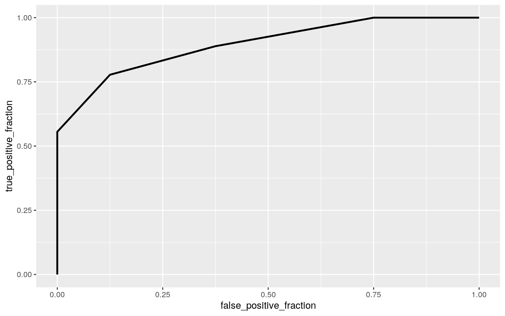
All of the metric are great, which clearly indicates that this is an overfitted model. That’s not surprising though because for 22 observations, we’re considering 126 explanatory variables.
I had to comment all of this out becaues it’s not knitting. Because of an error in this chunk.
bikes_l <- bikes_m %>% mutate(y = ifelse(YieldVeh > .8, 1, 0)) %>% select(-STREET, -Duration_Hrs, -Start, -End, -YieldVeh, -NRTOR)
model3 <- glm(y ~ ., data = bikes_l, family = "binomial")
bikes_l$probs <- predict(model3, type = "resp")
class_diag(bikes_l$probs, bikes_l$y)For some reason, this isn’t working and I can’t figure out why. I tried to remove all potentially problematic columns. The error I’m getting is Error in [.default(tab, 2, 2) : subscript out of bounds.
k=10 #choose number of folds
data<-bikes_l[sample(nrow(bikes_l)),] #randomly order rows
folds<-cut(seq(1:nrow(bikes_l)),breaks=k,labels=F) #create folds
diags<-NULL
for(i in 1:k){
## Create training and test sets
train<-data[folds!=i,]
test<-data[folds==i,]
truth<-test$y ## Truth labels for fold i
## Train model on training set (all but fold i)
fit<-glm(y ~ .,data=train,family="binomial")
## Test model on test set (fold i)
probs<-predict(fit,newdata = test,type="response")
## Get diagnostics for fold i
diags<-rbind(diags,class_diag(probs,truth))}
summarize_all(diags,mean) #average diagnostics across all k foldsPerforming LASSO on the same model and variables. LASSO picks PR1_PC & T_VFY_Bikr, which are the 1 party reactions per potential conflict and total number of vehicle failure to yields toward cyclists.
I had to comment all of this out becaues it’s not knitting. Because of an error in this chunk.
#bikes_l <- bikes_m %>% mutate(y = YieldVeh > .8, 1, 0) %>% select(-STREET, -Duration_Hrs, -NRTOR, -Start, -End, -YieldVeh) %>% na.omit
#y <- bikes_l$y %>% as.matrix #grab response
#x <- model.matrix(y ~-1+., data = bikes_l) #grab predictors, dropping intercept term
#cv <- cv.glmnet(x, y, family = "binomial") #picks an optimal value for lambda through 10-fold CV
#lasso <- glmnet(x, y, family = "binomial", lambda = cv$lambda.1se) #doing the actual lasso
#coef(lasso) #coefficients that lasso picked
#lassodat <- bikes_l %>% select(PR1_PC, T_VFY_Bikr, y)
#then just run a regression on it to predict vehicle yield > .8% from everything
#lassofit <- glm(y ~., data = lassodat, family = "binomial")
#lassoprobs <- predict(lassofit, type = "response") #get probs
#table(preds = lassoprobs >.5, truth = lassodat$y) #truth labels, and then probs >.5
#class_diag(lassoprobs, lassodat$y)Now, performing 10 fold CV only using the lasso variables. For some reason, this isn’t working and I can’t figure out why. I tried to remove all potentially problematic columns. The error I’m getting is Error in [.default(tab, 2, 2) : subscript out of bounds.
#k=10 #choose number of folds
#data<-lassodat[sample(nrow(lassodat)),] #randomly order rows
#folds<-cut(seq(1:nrow(lassodat)),breaks=k,labels=F) #create folds
#diags<-NULL
#for(i in 1:k){
## Create training and test sets
#train<-data[folds!=i,]
#test<-data[folds==i,]
#truth<-test$y ## Truth labels for fold i
## Train model on training set (all but fold i)
#fit<-glm(y ~ .,data=train,family="binomial")
## Test model on test set (fold i)
#probs<-predict(fit,newdata = test,type="response")
## Get diagnostics for fold i
#diags<-rbind(diags,class_diag(probs,truth))}
#summarize_all(diags,mean) #average diagnostics across all k folds```